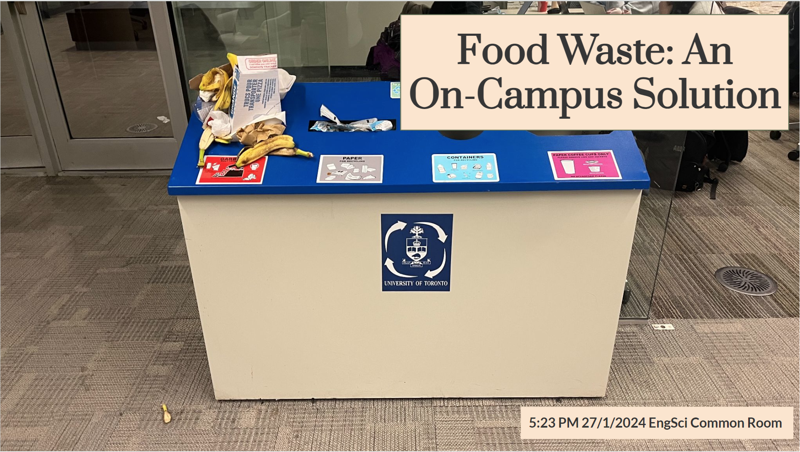

Clarke Prize Environmental Design Challenge
I assembled a team of my friends to tackle the weekend-long 2024 Clarke Prize Environmental Design Challenge, our first ever team design challenge. It focused on the identification of an area for improvement in the sustainability efforts of the University or Toronto and the proposal of a solution.
Our identified area of improvement was the lack of compost bins on campus with the exception of the ones in dining halls. From published data, the University sent 351 tons of uncomposted food waste to landfills in 2023, equating to 30.4 tons of methane gas emissions in a year. Additionally, UofT sends out the compost it does collect to third-party companies with no control over what happens to it.
This is a picture I took on the first night of the challenge in the Engineering Science common room when we were debated between different opportunities to address. Even the bananas given to people in the challenge from the organizers of this sustainability event ended up in the trash.
We decided that there was room for a new system that could help address this opportunity. Our proposed solution conisted of a greater compost collection network on campus, the retention of the currently disposed of compost, and the integration of an anaerobic digester outside of the Bahen building to feed into the campus steam plant. This would take in compost and turn it into fertilizer and biogas for the campus. The University of Toronto still uses natural gas to heat the campus through their steam plant, so we figured that a new biogas source would be able to cut the University's reliance on extracted fossil fuels and prevent the emissions from later decomposition in landfills.
The proposed sytem would be able to process 3 tonnes of compost per day (All of the compost on campus), cost $1,000,000 to build, and produce 1728 KWh per day, an energy equivalent the amount required to power the nearby Gerstein Library.
The full presentation with further justification can be seen below: